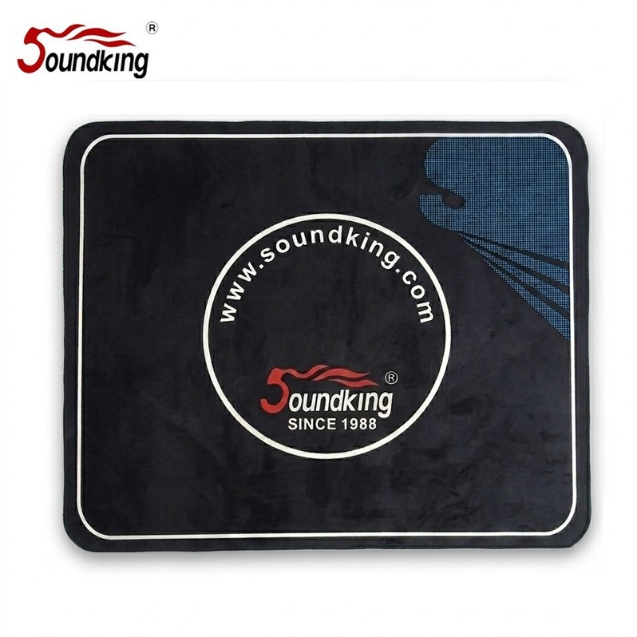

DRUM-MAT은 드럼 세트 아래에 깔아 바닥 긁힘·소음·드럼 슬립을 방지하는 드럼 전용 매트입니다. 미끄럼 방지 고무 바닥으로 연주 중 드럼이 앞뒤로 밀려 나가지 않으며, 120×150 cm의 표준 크기로 대부분의 전자드럼·어쿠스틱 드럼 세트를 커버합니다.

드럼 세트 아래에 깔아 바닥·소음·슬립을 방지하는 드럼 전용 매트. 120×150 cm 표준 크기와 휴대용 가방 기본 포함.
DRUM-MAT은 드럼 세트 아래에 깔아 사용하는 전용 매트입니다. 드럼을 바닥에 바로 놓으면 연주 중 페달 구름 때문에 드럼이 앞뒤로 점점 밀려 나가고, 바닥이 긁히며, 진동이 아래층으로 고스란히 전달되는 문제가 발생하는데, DRUM-MAT 하나로 세 가지 문제를 모두 해결할 수 있습니다.
120×150 cm의 표준 크기는 5 Drum 3 Cymbal 구성의 전자드럼은 물론 어쿠스틱 드럼 세트까지 커버합니다. 바닥면은 미끄럼 방지 고무 처리되어 있어 연주 중 매트가 밀리지 않으며, 휴대용 전용 가방이 기본 포함되어 있어 연습실 이동·밴드 리허설·교회 이동 등 휴대 운용에도 편리합니다.
| 모델명 | DRUM-MAT |
|---|---|
| 타입 | Drum Mat · Portable · Anti-Slip |
| Size | 120 × 150 cm |
| 바닥 | 미끄럼 방지 고무 |
| 구성 | 본체 + 휴대용 가방 (기본 포함) |
| 권장소비자가 | 66,000 원 / 개 (VAT 포함) |
※ 본 사양 · 단가는 수입원(현대에이브이씨) 2026-01-01 전자드럼·스탠드 제품 가격표 기준입니다.